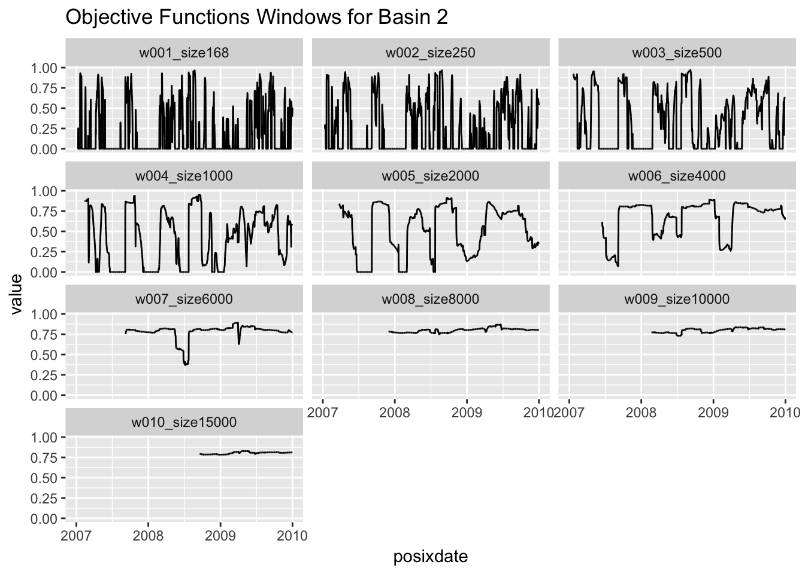
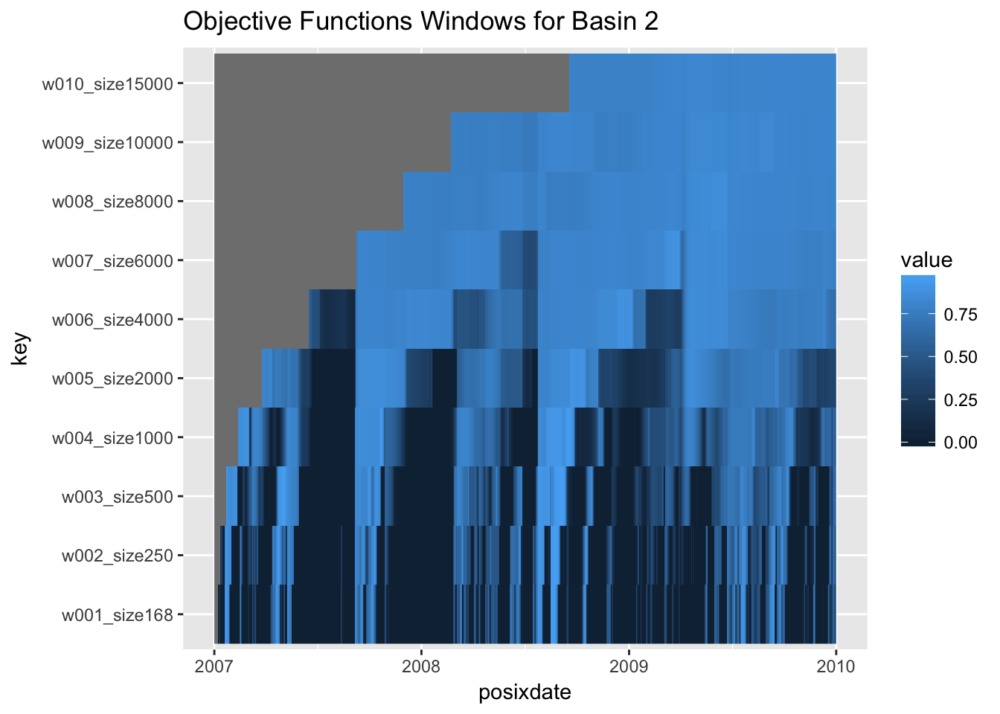
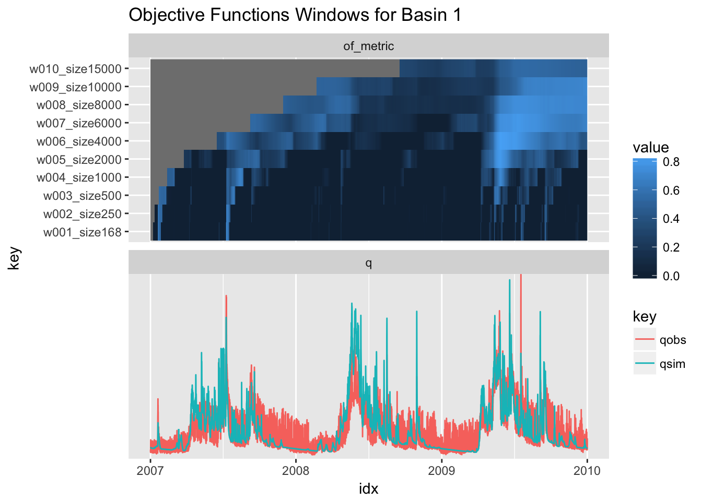
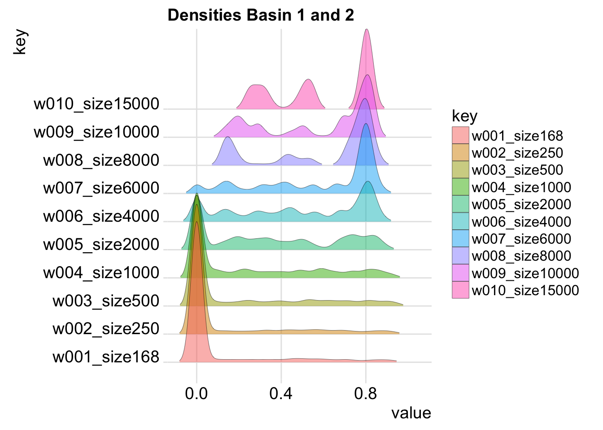

Chapter 7 Windowed Objective Function
This chapter defines the function judge_window. It provides an low quality option to get a static summar of the interactive functions judge_explore and judge_compare.
Here is an example of its use, together with an example plot:
coscos::libraries(coscos,
visCOS,
tidyverse,
ggridges)
#
cos_data <- coscos::viscos_example( ) %>%
coscos::cook_cosdata()
window_sizes <- c(168,250,500,1000,2000,4000,6000,8000,10000,15000)
windows <- judge_window(cos_data,
of_metrics = list(nse = coscos::of_nse,
kge = coscos::of_kge),
window_sizes = window_sizes)Ideas for plots:
# different line plots of the objective function
subset(windows$nse$QOBS_0002, le_group == "of_metric" ) %>%
ggplot(data = .) +
geom_line( aes(x = posixdate, y = value) ) +
facet_wrap(~key, ncol = 3) +
labs(title = "Objective Functions Windows for Basin 2")## Warning: Removed 167 rows containing missing values (geom_path).
ggplot(subset(windows$nse$QOBS_0002, le_group == "of_metric")) +
geom_raster(aes(x = posixdate,
y = key,
fill = value)) +
labs(title = "Objective Functions Windows for Basin 2")
# superimposed time series:
ggplot(windows$kge$QOBS_0001, aes(x = idx)) +
facet_wrap(~le_group, scales = "free_y", ncol = 1) +
geom_raster(data = subset(windows$nse$QOBS_0001,
le_group == "of_metric"),
aes(x = posixdate,
y = key,
fill = value)) +
geom_line(data = subset(windows$nse$QOBS_0001,
le_group == "q"),
aes(x = posixdate,
y = value,
color = key)) +
labs(title = "Objective Functions Windows for Basin 1")
# densities:
windows$nse %>%
bind_rows(.) %>%
filter(le_group == "of_metric") %>%
ggplot(., aes(x = value, y = key, fill = key)) +
geom_density_ridges(scale = 5,
size = 0.1,
rel_min_height = 0.01,
alpha = 0.5) +
theme_ridges( ) +
labs(legend.title = "time resolution",
title = "Densities Basin 1 and 2")## Picking joint bandwidth of 0.027## Warning: Removed 93816 rows containing non-finite values (stat_density_ridges).
7.1 Code
# ---------------------------------------------------------------------------
# Code for cooking data
# authors: Daniel Klotz, Johannes Wesemann, Mathew Herrnegger
# !!!!!!!!!!!!!!!!!!!!!!!!!!!!!!!!!!!!!!!!!!!!!!!!!!!!!!!!!!!!!!!!!!!!!!!!!!!# --------------------------------------------------------------------------
#' Objectie Function Windowing
#'
#' Compute the objective function for a set of windows.
#'
#' @import dplyr
#' @importFrom purrr map2
#' @importFrom tibble as_tibble
#' @importFrom magrittr set_names
#' @importFrom tidyr gather
#'
#' @export
judge_window <- function(cos_data,
of_metrics = list(
nse = coscos::of_nse,
kge = coscos::of_kge,
pbias = coscos::of_pbias,
corr = coscos::of_cor),
window_sizes = c(20L,500L),
na_filling = FALSE,
opts = coscos::viscos_options()) {
if(missing(of_metrics)) {
stop("The list of objective functions ('of_metrics') is missing!")
}
if (class(of_metrics) != "list") {
of_metrics <- list(of_metrics)
}
if (is.null(names(of_metrics))){
names(of_metrics) <- paste("of", 1:length(of_metrics), sep = "_")
}
#
map(of_metrics,
function(of) {
window_fun(cos_data,
of,
window_sizes = window_sizes,
na_filling = FALSE,
opts = opts)
}) %>%
as_tibble(.)
}# --------------------------------------------------------------------------
#' Objectie Function Windowing
#'
#' Compute the objective function for a set of windows.
#'
#' @import dplyr
#' @importFrom purrr map2
#' @importFrom tibble as_tibble
#' @importFrom magrittr set_names
#' @importFrom tidyr gather
window_fun <- function(cos_data,
of_metric,
window_sizes = c(20L,500L),
na_filling = FALSE,
opts = coscos::viscos_options()) {
cosdata <- coscos::cook_cosdata(cos_data)
cosdata_length <- nrow(cosdata)
lb <- opts[["of_limits"]] %>%
.[1]
o_columns <- cosdata %>%
select( starts_with(opts[["name_o"]]) )
s_columns <- cosdata %>%
select( starts_with(opts[["name_s"]]) )
data_numbers <- names(o_columns) %>%
gsub(opts[["name_o"]], "", ., ignore.case = TRUE) %>%
gsub("\\D", "", ., ignore.case = TRUE)
# make plotlist: =========================================================
#§ care!! we need to quarantee that step == 0 and window_size == 0 will
# $ not make problems!
if ( min(window_sizes) <= 0 ) {
stop("minimum window size needs to be zero!")
} else if( max(window_sizes) >= cosdata_length ) {
stop("maximum window size needs to be smaller than nrow(cos_data)")
}
all_window_sizes <- window_sizes %>%
as.integer(.)
if (length(all_window_sizes) == 0) {
stop("`window_size` seems to be ill-defined. Resulting lenght is 0")
}
# define functions for the roll:
na_filler_fun <- function(in_data) {
if (na_filling) {
fill_idx <- in_data %>%
is.na(.) %>%
not(.) %>%
which(.) %>%
min(.)
in_data[1:fill_idx] <- in_data[fill_idx]
}
return(in_data)
}
fill_NAs <- function(in_data) {
if (na_filling) {
apply(in_data, 2, na_filler_fun)
}
return(in_data)
}
apply_ceilings <- function(in_data) {
apply(in_data, 2, function(x) pmax(x,lb))
}
window_names <- "w" %&%
sprintf("%.3i",1:length(all_window_sizes)) %_%
"size" %&% all_window_sizes
roll_of <- function(o_col, s_col) {
sapply(all_window_sizes,
function(width) roll_roll(d1 = o_col,
d2 = s_col,
fun = of_metric,
width = width)) %>%
fill_NAs(.) %>%
apply_ceilings(.) %>%
tibble::as_tibble(.) %>%
magrittr::set_names(.,window_names) %>%
dplyr::mutate(idx = 1:cosdata_length,
posixdate = cos_data[[ opts[["name_COSposix"]] ]],
qobs = o_col,
qsim = s_col) %>%
tidyr::gather(., key, value, -idx, -posixdate) %>%
dplyr::mutate(le_group = ifelse((key == "qobs" | key == "qsim"), "q", "of_metric"))
}
# apply roll_of
window_list <- purrr::map2(o_columns, s_columns, roll_of)
} # --------------------------------------------------------------------------
#' Objectie Function Rolling Functionallity
#'
#' Roll an objective fucntion over two sets of data (d1 and d2)
#' @import dplyr
#' @import purrr
#' @importFrom magrittr set_names
#'
#' @keywords internal
roll_roll <- function(d1,
d2 = NULL,
of_metric,
width,
...) {
# functions: =============================================================
replace_xvar_entries <- function(le_list, xvar) {
g <- le_list[names(xvar)]
le_list[names(xvar)] <- xvar
return(le_list)
}
# calc: ==================================================================
n <- nrow(d1)
from <- pmax((1:n) - width + 1, 1)
to <- 1:n
elements <- apply(cbind(from, to), 1, function(x) seq(x[1],x[2])) %>%
set_names(., paste(from, to, sep = ":") )
skip <- sapply(elements, length) %>%
is_less_than(width)
Xvar <- elements %>%
.[!skip] %>%
purrr::map_dbl(., function(which) of_metric(d1[which,] , d2[which, ]))
Xvar_final <- rep(new(class(Xvar[1]), NA), length(from)) %>%
replace_xvar_entries(.,Xvar)
return(Xvar_final)
}